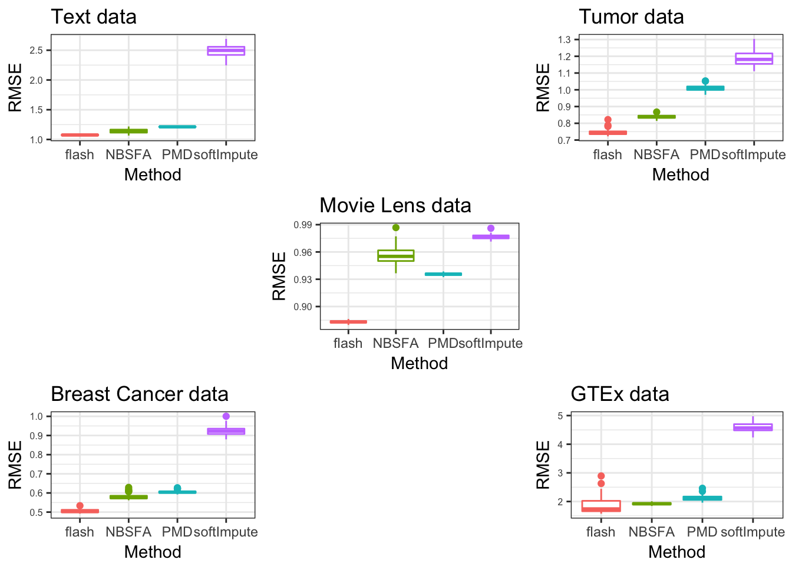
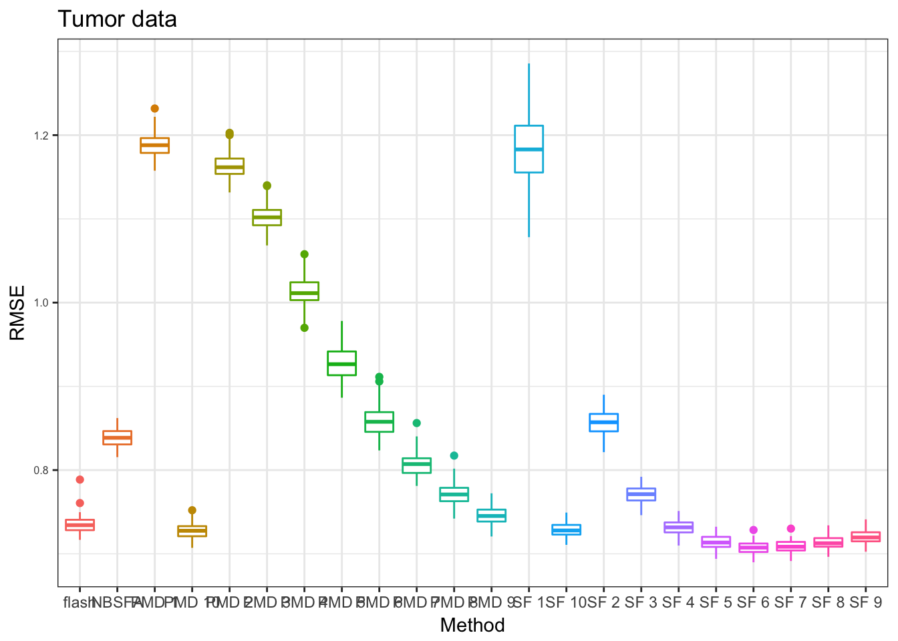
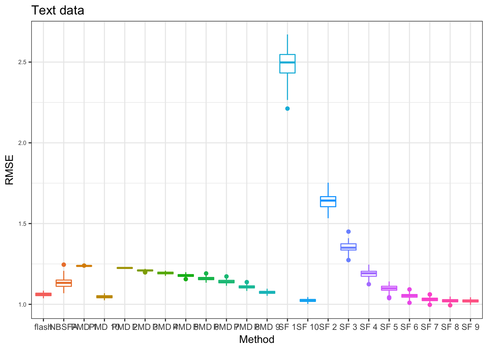
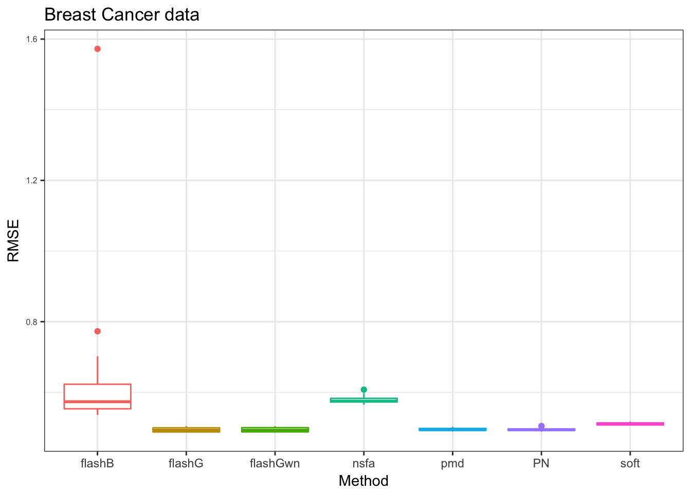
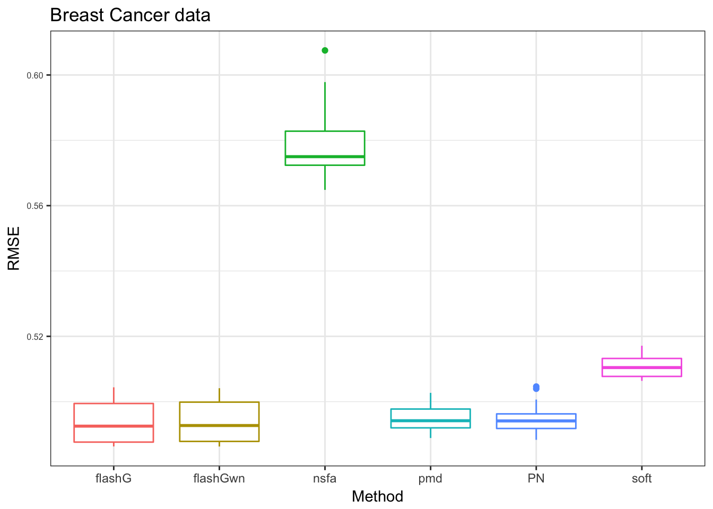
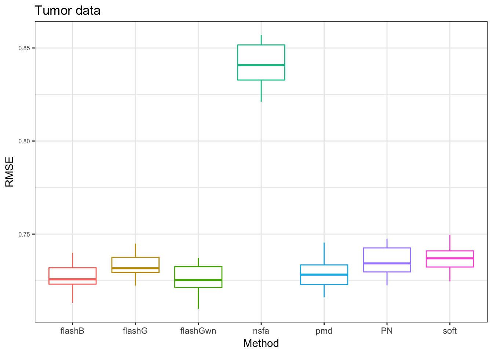

Some useful information of OCV for missing data
wei wang
2018-01-25
Last updated: 2018-01-25
Code version: 1b8a705
settings for the 5 data sets in our paper.
other experiments during the test
library(ggplot2)
plot_res = function(output,title = "data",legend_position = "none", x_label){
rmse = as.vector(output)
N = dim(output)[1]
# methods = rep(c("flash","NBSFA","PMD","softImpute"), each = N)
methods = rep(x_label, each = N)
df = data.frame(RMSE = rmse, Method = methods )
p<-ggplot(df, aes(x=Method, y=RMSE, color=Method)) +
geom_boxplot()+
# geom_violin()+
ggtitle(title) + theme_bw()+
theme(legend.position= legend_position, legend.text=element_text(size=15), axis.text.y = element_text(size =6))
p
}
x_label = c("flash","NBSFA","PMD","softImpute")
PT_res = readRDS("../data/missingvalue/OCVtemplate/RCCres/president_box.rds")
pp = plot_res(PT_res,"Text data",x_label = x_label)
DT_res = readRDS("../data/missingvalue/OCVtemplate/RCCres/denoiseRtumor_box.rds")
pd = plot_res(DT_res,"Tumor data",x_label = x_label)
GZ_res = readRDS("../data/missingvalue/OCVtemplate/RCCres/gtexzscore_box.rds")
pg = plot_res(GZ_res,"GTEx data",x_label = x_label)
BC_res = readRDS("../data/missingvalue/OCVtemplate/RCCres/BreastCancer_box.rds")
pb = plot_res(BC_res,"Breast Cancer data",x_label = x_label)
ML_res = readRDS("../data/missingvalue/OCVtemplate/RCCres/ML100K_box.rds")
ML_res[c(2,13,17,21,29,37,62,76,77,93,95,100),] = NA
ML_res = matrix(as.numeric(ML_res),ncol = 4)
pM = plot_res(ML_res,"Movie Lens data",x_label = x_label)plots
gridExtra::grid.arrange(pp,pd,pg,pb,pM, layout_matrix = rbind(c(1,NA,2),c(NA,5,NA),c(4,NA,3)))Warning: Removed 48 rows containing non-finite values (stat_boxplot).
results for different tuning parameters
pmd_c = sapply(seq(1,10),function(x){paste("PMD",x)})
softImpute_c = sapply(seq(1,10),function(x){paste("SF",x)})
x_label= c("flash","NBSFA",pmd_c,softImpute_c)
PT_res = readRDS("../data/missingvalue/box_res_grids_sf_pmd/denoiseTumor_box.rds")
pt = plot_res(PT_res,"Tumor data",x_label = x_label)
pt
PT_res = readRDS("../data/missingvalue/box_res_grids_sf_pmd/TEXT_prsdt_box.rds")
pp = plot_res(PT_res,"Text data",x_label = x_label)
pp
use OCV choose the tuning parameters
| labels | null check | backfitting | greedy | ebnm_ash | ebnm_pn |
|---|---|---|---|---|---|
| flashG | yes | yes | yes | ||
| flashGwn | yes | yes | |||
| flashB | yes | yes | yes | ||
| PN | yes | yes | yes |
Breast Cancer data
we use 10 grids for softImpute and PMD
PB_res = readRDS("../data/missingvalue/testingcode/box_Breast.rds")
x_label= c("PN","flashG","flashGwn","flashB","nsfa","pmd","soft")
pb = plot_res(PB_res,"Breast Cancer data",x_label = x_label)
pb
we take the ‘flashB’ away to compare the rest.
x_label= c("PN","flashG","flashGwn","nsfa","pmd","soft")
pb = plot_res(PB_res[,-4],"Breast Cancer data",x_label = x_label)
pb
denoiseR Tumor data
we use 10 grids for softImpute and PMD
PT_res = readRDS("../data/missingvalue/testingcode/box_denoiseTumor.rds")
x_label= c("PN","flashG","flashGwn","flashB","nsfa","pmd","soft")
pt = plot_res(PT_res,"Tumor data",x_label = x_label)
pt
text data
in this data, we add zero as use zero values as imputation to compare with other methods.
PT_res = readRDS("../data/missingvalue/testingcode/box_president.rds")
x_label= c("PN","flashG","flashGwn","flashB","nsfa","pmd","soft","zero")
pt = plot_res(PT_res,"Text data",x_label = x_label)
pt
Session information
sessionInfo()R version 3.3.0 (2016-05-03)
Platform: x86_64-apple-darwin13.4.0 (64-bit)
Running under: OS X 10.13.2 (unknown)
locale:
[1] en_US.UTF-8/en_US.UTF-8/en_US.UTF-8/C/en_US.UTF-8/en_US.UTF-8
attached base packages:
[1] stats graphics grDevices utils datasets methods base
other attached packages:
[1] MASS_7.3-47 workflowr_0.4.0 rmarkdown_1.6 reshape2_1.4.3
[5] ebnm_0.1-7 softImpute_1.4 Matrix_1.2-11 ssvd_1.0
[9] flashr2_0.4-0 PMA_1.0.9 impute_1.48.0 plyr_1.8.4
[13] ggplot2_2.2.1
loaded via a namespace (and not attached):
[1] Rcpp_0.12.14 git2r_0.19.0 iterators_1.0.9
[4] tools_3.3.0 digest_0.6.13 evaluate_0.10.1
[7] tibble_1.3.4 gtable_0.2.0 lattice_0.20-35
[10] rlang_0.1.6 foreach_1.4.4 rstudioapi_0.6
[13] yaml_2.1.16 parallel_3.3.0 gridExtra_2.3
[16] stringr_1.2.0 knitr_1.18 REBayes_0.85
[19] rprojroot_1.2 grid_3.3.0 flashr_0.1.1
[22] ashr_2.2-3 magrittr_1.5 backports_1.1.2
[25] scales_0.4.1 codetools_0.2-15 htmltools_0.3.6
[28] assertthat_0.2.0 colorspace_1.3-2 labeling_0.3
[31] stringi_1.1.6 Rmosek_7.1.2 lazyeval_0.2.0
[34] pscl_1.5.2 doParallel_1.0.11 munsell_0.4.3
[37] truncnorm_1.0-7 SQUAREM_2017.10-1This R Markdown site was created with workflowr